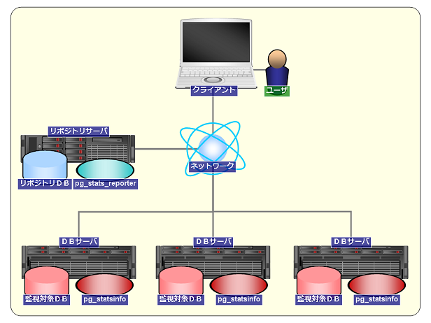
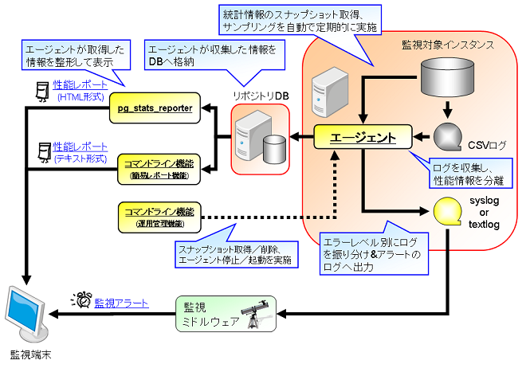

PostgreSQL サーバの利用統計情報を定期的に収集・蓄積することで、DB設計やPostgreSQLの運用(日々の処理傾向の把握、
性能劣化などの兆候や問題発生時の原因の把握等)に役立つツールです。
起動や終了、パラメータの設定は PostgreSQL と密に連携しており、手間をかけずに導入可能です。
pg_statsinfo 3.3 からの変更点はこちらをご覧ください。
pg_statsinfo は、PostgreSQL サーバの統計情報や活動状況を一定の時間間隔毎に定期的に収集し蓄積する機能と、 PostgreSQL の出力するサーバログを解析することでSQLの性能情報を取得する機能やログ出力を加工する機能があります。 また、蓄積した情報を元にテキスト形式のレポートを出力するコマンドを提供します。
また、pg_statsinfo で収集した情報は pg_stats_reporter を用いることでグラフィカルな形で解析・出力することがきます。
pg_statsinfo のシステム構成例と動作概要のイメージ図を以下に示します。

図1: システム構成例

図2: 動作概要イメージ
統計情報は一定の時間間隔で取得され、リポジトリ・データベース (以下 リポジトリDB) に保存されます。 統計情報は各インスタンスのデータベースクラスタ単位で取得できます。 リポジトリDBは、監視対象インスタンスと同一インスタンスのデータベースでも、別インスタンスでも設定可能です。 また、1つのリポジトリDBに対して複数の監視対象インスタンスの統計情報を格納することもできます。 なお 以降では pg_statsinfo で取得した統計情報を、スナップショットと定義します。
スナップショットとして以下の統計情報を収集します。
スナップショットのサイズは、DB内のオブジェクト数に依存しますが、概ね1回のスナップショットで1DBあたり600 - 800KBを消費します。 デフォルトの取得間隔(10分間隔)の場合、監視対象インスタンス一つあたり1日で90 - 120MBを消費します。
リポジトリDBのテーブル構成に関しては、「pg_statsinfo v10 リポジトリDB構成」を参照してください。
PostgreSQL が出力するサーバログをCSVログ、テキストログ、syslog に分配して出力します。
PostgreSQL が出力するサーバログを収集し、リポジトリDBに蓄積します。
監視対象インスタンスの状態を定期的 (スナップショット取得時) にチェックし、問題を検知した場合にアラートメッセージをテキストログに出力します。 アラートメッセージは、メッセージレベル "ALERT" で出力されます。なお、アラート機能で検出したアラートの内容は、リポジトリDBにも蓄積されます。
アラート機能で判定する項目は以下のとおりです。
監視対象インスタンス毎に、アラート機能の有効／無効とアラート条件(閾値)を設定することができます。
(*1) テーブルの相関係数は、クラスタ化テーブル(クラスタインデックスが存在するテーブル)を対象に判定が行われます。
各アラート項目のアラートメッセージの内容については「pg_statsinfo v10 レポート項目一覧」をご覧ください。
アラート機能の設定方法はこちらをご覧ください。
コマンドライン機能はレポート生成および運用管理を行うためのコマンドを提供します。
※コマンドライン機能の使用方法はこちらをご覧ください。
リポジトリDBに保存されたスナップショットから任意の期間のレポートをテキスト形式で出力するコマンドを提供します。
また、レポートの出力以外に以下の操作を行うことができます。
簡易レポート機能が出力するレポートの項目については「pg_statsinfo v10 レポート項目一覧」をご覧ください。
なお、簡易レポート機能が出力するレポートの項目は pg_stats_reporter と同等です。
グラフを用いたグラフィカルなレポートを出力したい場合は pg_stats_reporter を使用してください。
pg_statsinfo の運用管理向けの操作を行うコマンドを提供します。
運用管理機能で行うことができる操作は以下のとおりです。
1日1回、任意の時刻に下記のメンテナンス操作を行うことができます。
本機能はデフォルトは ON であり、上記の操作を自動メンテナンス実行時刻に実行します。
(注1) スナップショットの自動削除が停止している場合、古いスナップショットは自動的に削除されません。必要に応じてユーザ操作で定期的に削除してください。
(注2) 蓄積ログの自動削除が停止している場合、古いログは自動的に削除されません。必要に応じてユーザ操作で定期的に削除してください。
(注3) ログファイルの自動整理が停止している場合、古いログファイルは自動的には削除されません。必要に応じてユーザ操作で定期的に削除してください。
自動メンテナンス機能の使用方法はこちらをご覧ください。
pg_statsinfo のインストール方法について説明します。各インストールパッケージはこちらからダウンロードして下さい。
$ su # rpm -ivh pg_statsinfo-10.0-1.pg10.rhel7.x86_64.rpm
ソースコードからビルドするには、pgxs を使用します。 なお、pg_statsinfo の登録スクリプト (sql) を手動でインストールする必要はありません。 監視対象インスタンス、リポジトリDB共に、初回起動時に必要に応じて エージェントがスキーマを自動的にインストールします。
$ tar xzvf pg_statsinfo-10.0.tar.gz $ cd pg_statsinfo-10.0 $ make USE_PGXS=1 $ su # make USE_PGXS=1 installpgxsを使用しない場合、contrib配下にpg_statsinfoのフォルダを配置し、make, make installを実施してください。
contrib/pg_statsinfo.sql、contrib/pg_statsrepo.sqlは自動的にインストールされるため、手動での実行は不要です。
監視対象の PostgreSQL インスタンスを停止した状態で、postgresql.conf に以下の設定を行います。 この設定では、スナップショットの保存先は同一インスタンスの postgres データベースになります。 これら以外の設定については、設定ファイルを参照して下さい。
#最小設定 shared_preload_libraries = 'pg_statsinfo' # 事前ロードを行う log_filename = 'postgresql-%Y-%m-%d_%H%M%S.log' # ログファイル名を指定する
#推奨設定 shared_preload_libraries = 'pg_statsinfo' # 事前ロードを行う pg_statsinfo.snapshot_interval = 30min # スナップショットの取得間隔 pg_statsinfo.enable_maintenance = 'on' # 自動メンテナンス設定 pg_statsinfo.maintenance_time = '00:02:00' # 自動メンテナンス実行時刻設定 pg_statsinfo.repolog_min_messages = disable # ログ蓄積機能の設定 log_filename = 'postgresql-%Y-%m-%d_%H%M%S.log' # ログファイル名を指定する log_min_messages = 'log' # ログへ出力するメッセージレベル。 pg_statsinfo.syslog_min_messages = 'error' # syslogに出力するログレベルを指定する。 pg_statsinfo.textlog_line_prefix = '%t %p %c-%l %x %q(%u, %d, %r, %a) ' # pg_statsinfoがテキストログに出力する際、各行の先頭に追加される書式を指定する。log_line_prefixと同じ形式で指定する。 pg_statsinfo.syslog_line_prefix = '%t %p %c-%l %x %q(%u, %d, %r, %a) ' # pg_statsinfoがsyslog経由でログを出力する際、各行の先頭に追加される書式を指定する。 track_functions = 'all' # ストアドプロシージャの呼び出しに関する統計情報を収集する log_checkpoints = on # チェックポイントを記録 log_autovacuum_min_duration = 0 # 自動バキュームを記録 #pg_statsinfo.long_lock_threshold = 30s # ロック競合情報に記録する対象の条件(閾値)を指定する
pg_statsinfo は以下の設定を強制的に上書きすることに注意してください。
PostgreSQL 起動ユーザでの localhost からのアクセスではパスワードの入力が不要になるよう設定します。 この際の認証には ident 方式を推奨します。 一般的によく利用される「OSユーザ名 = DB管理者名 = postgres」の場合には、pg_hba.conf に以下を追加します。 他の認証方式よりも優先するため、ファイルの最初のほうに書く必要があることに注意してください。 UNIX 環境では TYPE=local の ident 認証を使うのが手軽です。
# TYPE DATABASE USER CIDR-ADDRESS METHOD [for UNIX] local all postgres ident
監視対象インスタンスの postgres データベースに pg_stat_statements をインストールすることで、クエリの統計情報もスナップショットとして収集できるようになります。
利用する場合には、postgresql.conf の shared_preload_libraries に pg_stat_statements を追加し、初回起動時に以下の手順で登録してください。
$ psql -d postgres -c "CREATE EXTENSION pg_stat_statements"
また、必要に応じて設定ファイルに下記のパラメータを設定してください。
上記のパラメータの説明は設定ファイルをご覧ください。
監視対象インスタンスの postgres データベースに pg_store_plans をインストールすることで、クエリの実行計画もスナップショットとして収集できるようになります。
利用する場合には、postgresql.conf の shared_preload_libraries に pg_store_plans を追加し、初回起動時に以下の手順で登録してください。
$ psql -d postgres -c "CREATE EXTENSION pg_store_plans"
また、必要に応じて設定ファイルに下記のパラメータを設定してください。
上記のパラメータの説明は設定ファイルをご覧ください。
(注1) pg_stats_reporter を利用する場合は、リポジトリDBにも pg_store_plans をインストールする必要があります。
なお、リポジトリDBへのインストールの際は上記の shared_preload_libraries の設定は不要です。
以上でインストールは終了です。
pg_statsinfo の操作方法と各種設定について説明します。
起動は、通常どおりPostgreSQLを起動するだけです。 PostgreSQL の起動と連動して エージェントが自動的に起動します。 エージェント単体で起動することはできません。
$ pg_ctl start [OPTIONS]
終了も同様に、PostgresSQL サーバの終了に連動します。 smart 以外の終了モード (fast, immediate) ではサーバログにエラーが出力される場合がありますが、正常な動作です。
$ pg_ctl stop -m smart [OPTIONS]
また、PostgreSQL サーバを終了せずに エージェントのみを停止するには以下のコマンドを実行します。
$ pg_statsinfo --stop [OPTIONS]
停止中のエージェントを起動するには以下のコマンドを実行します。
$ pg_statsinfo --start [OPTIONS]
(注1) PostgreSQLの設定パラメータに「shared_preload_libraries = 'pg_statsinfo'」が設定されていない場合は、エージェントの停止／起動が実行できません。
スナップショットを一定の時間間隔で定期的に取得します。postgresql.confに以下の設定を記述することで自動取得を実行できます。
例: スナップショットの取得間隔を30分に設定する。
pg_statsinfo.snapshot_interval = 30min
任意のタイミングでスナップショットを取得する場合は、監視対象のインスタンスが存在するDBクラスタのpostgresデータベースに対し、関数 statsinfo.snapshot(text DEFAULT NULL) を実行して下さい。
引数でスナップショット取得理由をコメントとして記録できます。
例: 手動でスナップショットを取得します。コメントとして文字列 'comment' を付与します。
$ psql -d postgres -c "SELECT statsinfo.snapshot('comment')"
なお、手動取得は非同期で行われます。上記のコマンド完了時にスナップショット取得が完了していない場合があります。
自動メンテナンス機能を使用することで保持期間を経過したスナップショット削除を自動的に削除することができます。
自動メンテナンスのスナップショット削除はデフォルトが ON となっています。
自動メンテナンス機能の使い方はこちらをご覧ください。
スナップショットの手動削除は監視対象インスタンスに対して、関数 statsinfo.maintenance(timestamptz) を実行して下さい。 引数で指定した時刻より古いスナップショットが削除されます。
例: 取得日時が 2011-02-01 07:00:00 より古いスナップショットを削除します。
$ psql -d postgres -c "SELECT statsinfo.maintenance('2010-02-01 07:00:00'::timestamptz);"
なお、手動削除は非同期で行われます。上記のコマンド完了時にスナップショット削除が完了していない場合があります。
pg_statsinfo には PostgreSQL のサーバログをフィルタリングにより加工する機能があります。
以下では、出力されるログファイルの種類とフィルタリングの種類を説明します。
(注1) ログローテート前に将来リネーム予定のパスに既にファイルが存在する場合がありますが、これは正常な状態です。
(注2) 拡張子が「.copy」、「.err.n」のファイルが作成される場合があります。当該ファイルの詳細はこちらを参照してください。
ログファイルの出力例を以下に示します。
$ ls -l $PGDATA/log -rw------- 1 postgres postgres 433644 Oct 1 23:59 postgresql-2013-10-01_000000.csv -rw------- 1 postgres postgres 322167 Oct 1 23:59 postgresql-2013-10-01_000000.log -rw------- 1 postgres postgres 425449 Oct 2 23:59 postgresql-2013-10-02_000000.csv -rw------- 1 postgres postgres 321695 Oct 2 23:59 postgresql-2013-10-02_000000.log -rw------- 1 postgres postgres 255424 Oct 3 13:40 postgresql-2013-10-03_000000.csv -rw------- 1 postgres postgres 0 Oct 3 00:00 postgresql-2013-10-03_000000.log -rw------- 1 postgres postgres 190786 Oct 3 13:40 pg_statsinfo.log postgresql-2013-10-01_000000.csv ... ログローテート済みのCSVログ postgresql-2013-10-01_000000.log ... ログローテート済みのテキストログ (上記のCSVログの情報を元に加工したログ) postgresql-2013-10-02_000000.csv ... ログローテート済みのCSVログ postgresql-2013-10-02_000000.log ... ログローテート済みのテキストログ (上記のCSVログの情報を元に加工したログ) postgresql-2013-10-03_000000.csv ... 最新のCSVログ postgresql-2013-10-03_000000.log ... コンソールログ pg_statsinfo.log ................... テキストログ (最新のCSVログの情報を元に加工したログ)
pg_statsinfo.textlog_min_messages = warning
pg_statsinfo.textlog_nologging_users = 'postgres'
pg_statsinfo.adjust_log_level = on pg_statsinfo.adjust_log_info = '42P01'
(注1) メッセージレベルの変更は、サーバログ分配とサーバログ蓄積で共通です。
(注2) メッセージレベルの変更をサーバログ分配とサーバログ蓄積で個別に設定することはできません。
自動メンテナンス機能を使用することでログファイルの整理を行うことができます。
自動メンテナンスのログファイル整理はデフォルトが ON となっています。
自動メンテナンス機能の使い方はこちらをご覧ください。
サーバログ蓄積機能を使用することで PostgreSQL のサーバログをリポジトリDBに蓄積することができます。
また、リポジトリDBに蓄積するサーバログをフィルタリングすることが可能です。
監視対象DBとリポジトリDBが同一インスタンスの場合にはサーバログ蓄積機能を無効にすることを推奨します。
有効とした場合、サーバログ蓄積が発行するクエリ(INSERT)に起因してサーバログ出力が発生し、サーバログ蓄積を再帰的に繰り返すことがあります。このような挙動となるのは、log_statementがallまたはmodの設定で、一般ユーザとしてリポジトリDBに接続している場合です。
pg_statsinfo.repolog_min_messages = warning
pg_statsinfo.repolog_min_messages = disable
pg_statsinfo.repolog_nologging_users = 'postgres'
(注1) メッセージレベルの変更は、サーバログ分配とサーバログ蓄積で共通です。
(注2) メッセージレベルの変更をサーバログ分配とサーバログ蓄積で個別に設定することはできません。
自動メンテナンス機能を使用することでリポジトリDBに蓄積されたログを定期的に削除することができます。
自動メンテナンスの蓄積ログの削除はデフォルトが ON となっています。
自動メンテナンス機能の使い方はこちらをご覧ください。
アラート条件(閾値)は、アラート設定テーブル(リポジトリDBの「statsrepo.alert」テーブル)で管理します。
各設定カラムの値を -1 に設定することで項目単位でアラートを無効にできます。
アラート設定テーブルのスキーマ構成を以下に示します。
| カラム名 | データ型 | デフォルト値 | 説明 |
|---|---|---|---|
| instid | bigint | － | 監視対象インスタンスID |
| rollback_tps | bigint | 100 | 秒間のロールバック数 |
| commit_tps | bigint | 1000 | 秒間のコミット数 |
| garbage_size | bigint | -1 | 監視インスタンス中の不要領域のサイズ(MB) |
| garbage_percent | integer | 30 | 監視インスタンスに占める不要領域の割合(%) |
| garbage_percent_table | integer | 30 | 各テーブルに占める不要領域の割合(%) |
| response_avg | bigint | 10 | クエリの平均レスポンス時間(秒) |
| response_worst | bigint | 60 | クエリの最長レスポンス時間(秒) |
| fragment_percent | integer | 70 | 各テーブルの相関係数(correlation)(%) |
| backend_max | integer | 100 | バックエンドの最大数 |
| disk_remain_percent | integer | 20 | テーブルスペースのディスク空き容量の割合(%) |
| loadavg_1min | real | 7.0 | 過去1分間のロードアベレージ |
| loadavg_5min | real | 6.0 | 過去5分間のロードアベレージ |
| loadavg_15min | real | 5.0 | 過去15分間のロードアベレージ |
| swap_size | integer | 1000000 | スワップ使用量(KB) |
| rep_flush_delay | integer | 100 | マスタとスタンバイ間のWAL書き込み遅延量(MB) |
| rep_replay_delay | integer | 200 | スタンバイのリカバリ遅延量(MB) |
| enable_alert | boolean | true | false に設定するとこのインスタンスについてのアラートが無効になります。 |
設定変更の例: 秒間ロールバック数の閾値を「3000」に変更する場合
# UPDATE statsrepo.alert SET rollback_tps = 3000 WHERE instid = <変更対象の監視対象インスタンスID>
このテーブルの行を削除すると、該当する監視対象インスタンスのアラート機能が無効になります。このアラートを有効にするためには新たな行を挿入する必要があります。
GUC 設定ファイルの pg_statsinfo.enable_alert を false にすることでアラート機能全体を無効にできます。監視対象インスタンス単位での無効化はアラート設定テーブルの enable_alert カラムで行います。デフォルト値はどちらも true です。
$ pg_statsinfo -r REPORTID [-i INSTANCEID] [-b SNAPID] [-e SNAPID] [-B DATE] [-E DATE] [-o FILENAME] [connection-options]
以下にコマンド例を示します。
以下のコマンド例では、ホスト名 localhost 上のポート 5432 で稼動しているリポジトリDBに対して、postgres データベースに、postgres ユーザで接続し、以下の条件のレポートを出力します。
$ pg_statsinfo -r All -h localhost -d postgres -p 5432 -U postgres
$ pg_statsinfo -l [-i INSTANCEID] [connection-options]
以下にコマンド例を示します。
以下のコマンド例では、ホスト名 localhost 上のポート 5432 で稼動しているリポジトリDBに対して、postgres データベースに、postgres ユーザで接続し、当該リポジトリDBに蓄積されているスナップショットの一覧を表示します。
$ pg_statsinfo -l -h localhost -d postgres -p 5432 -U postgres
$ pg_statsinfo -s [connection-options]
以下にコマンド例を示します。
以下のコマンド例では、ホスト名 localhost 上のポート 5432 で稼動しているリポジトリDBに対して、postgres データベースに、postgres ユーザで接続し、当該リポジトリDBに蓄積されているスナップショットのサイズを表示します。
$ pg_statsinfo -s -h localhost -d postgres -p 5432 -U postgres
$ pg_statsinfo -S COMMENT [connection-options]
以下にコマンド例を示します。
以下のコマンド例では、ホスト名 localhost 上のポート 5432 で稼動している監視対象インスタンスに対して、postgres データベースに、postgres ユーザで接続し、'COMMENT'をコメントとして付与したスナップショットを取得します。
$ pg_statsinfo -S 'COMMENT' -h localhost -d postgres -p 5432 -U postgres
$ pg_statsinfo -D SNAPID [connection-options]
以下にコマンド例を示します。
以下のコマンド例では、ホスト名 localhost 上のポート 5432 で稼動しているリポジトリDBに対して、postgres データベースに、postgres ユーザで接続し、当該リポジトリDBに蓄積されているスナップショットIDが 123 のスナップショットを削除します。
$ pg_statsinfo -D 123 -h localhost -d postgres -p 5432 -U postgres
$ pg_statsinfo --stop [connection-options]
以下にコマンド例を示します。
以下のコマンド例では、ホスト名 localhost 上のポート 5432 で稼動している監視対象インスタンスに対して、postgres データベースに、postgres ユーザで接続し、エージェントを停止します。
$ pg_statsinfo --stop -h localhost -d postgres -p 5432 -U postgres
$ pg_statsinfo --start [connection-options]
以下にコマンド例を示します。
以下のコマンド例では、ホスト名 localhost 上のポート 5432 で稼動している監視対象インスタンスに対して、postgres データベースに、postgres ユーザで接続し、エージェントを起動します。
$ pg_statsinfo --start -h localhost -d postgres -p 5432 -U postgres
データベース接続に関するオプションです。
スナップショット取得を実行する場合は監視対象インスタンス、それ以外はリポジトリDBへの接続情報を指定します。
自動メンテナンス機能を使用することで以下の操作を1日1回任意の時刻に行うことができます。
自動メンテナンス機能を使用するには、設定ファイル(postgresql.conf)に以下のパラメータを指定します。
設定の詳細については、設定ファイルをご覧ください。
設定例1: 毎日0時2分に7日間の保持期間を過ぎたスナップショットを自動削除する
pg_statsinfo.enable_maintenance = 'snapshot' # 自動メンテナンス設定 pg_statsinfo.maintenance_time = '00:02:00' # 自動メンテナンス実行時刻設定 pg_statsinfo.repository_keepday = 7 # スナップショットの保持期間設定
設定例2: 毎日0時2分に7日間の保持期間を過ぎた蓄積ログを自動削除する
pg_statsinfo.enable_maintenance = 'repolog' # 自動メンテナンス設定 pg_statsinfo.maintenance_time = '00:02:00' # 自動メンテナンス実行時刻設定 pg_statsinfo.repolog_keepday = 7 # 蓄積ログの保持期間設定
設定例3: 毎日0時2分に前日以前のCSVログファイルを圧縮アーカイブする
pg_statsinfo.enable_maintenance = 'log' # 自動メンテナンス設定 pg_statsinfo.maintenance_time = '00:02:00' # 自動メンテナンス実行時刻設定 pg_statsinfo.log_maintenance_command = '<PGHOME>/bin/archive_pglog.sh %l' # ログファイル整理コマンド設定 (*1) ※<PGHOME>: PostgreSQL インストールディレクトリ (*1) archive_pglog.sh archive_pglog.sh は同梱されるシェルスクリプトです。 前日以前のCSVログファイルを圧縮アーカイブし、ログファイル格納ディレクトリ配下にアーカイブファイル(TGZ)を作成します。 また、アーカイブしたCSVログファイルをログファイル格納ディレクトリから削除します。
設定例4: 毎日0時2分に7日間の保持期間を過ぎたスナップショットと蓄積ログを自動削除、かつ前日以前のCSVログファイルを圧縮アーカイブする
pg_statsinfo.enable_maintenance = 'on' # 自動メンテナンス設定 pg_statsinfo.maintenance_time = '00:02:00' # 自動メンテナンス実行時刻設定 pg_statsinfo.repository_keepday = 7 # スナップショットの保持期間設定 pg_statsinfo.repolog_keepday = 7 # 蓄積ログの保持期間設定 pg_statsinfo.log_maintenance_command = '<PGHOME>/bin/archive_pglog.sh %l' # ログファイル整理コマンド設定
(注1) 自動メンテナンス設定のデフォルトは、全ての操作を実行する設定('on')です。
(注2) 自動メンテナンスでスナップショット削除や蓄積ログ削除を行わない場合、手動で削除しない限りリポジトリDBに残り続けます。 不要となった古いスナップショットおよび蓄積ログは定期的に削除して下さい。
(注3) ログファイル整理コマンドの設定を省略した場合、上記の例と同じコマンドが適用されます。
(注4) 複数監視対象インスタンス－単一リポジトリDBの構成で、各監視対象インスタンスのスナップショットの保持期間を 互いに異なる期間に設定した場合、自動メンテナンス実行時には最も短く設定した期間のスナップショットが保持されます。 例えば、各監視対象インスタンスの設定ファイル(postgresql.conf)を以下のように設定した場合は、 過去3日間のスナップショットが保持されることになります。(蓄積ログに関しても同様)
<監視対象インスタンス1> pg_statsinfo.enable_maintenance = 'on' pg_statsinfo.repository_keepday = 7 <監視対象インスタンス2> pg_statsinfo.enable_maintenance = 'on' pg_statsinfo.repository_keepday = 5 <監視対象インスタンス3> pg_statsinfo.enable_maintenance = 'on' pg_statsinfo.repository_keepday = 3
pg_statsinfo は設定ファイルとして監視対象インスタンスの postgresql.conf を使用します。 設定ファイルに記載した内容は、インスタンス起動時とリロード時 (pg_ctl reload) に読み込まれ、動作に反映されます。
pg_statsinfo を利用するために必須のパラメータは以下です。 パラメータを後から変更するためには PostgreSQL インスタンスの再起動が必要な設定もあります。
| 設定項目 | 設定値 | 説明 |
|---|---|---|
| shared_preload_libraries | 'pg_statsinfo' | 事前読込み用のライブラリの指定。 pg_stat_statements、pg_store_plans を併用する場合は 'pg_statsinfo, pg_stat_statements, pg_store_plans' のようにカンマ区切りで指定します。 |
| log_filename | 'postgresql-%Y-%m-%d_%H%M%S.log' | CSVログおよびテキストログのファイル名。デフォルトから変更する場合でも、%Y, %m, %d, %H, %M, %S がこの順に全て表れる形式でなければなりません。 |
| track_counts | on | データベースの活動に関する統計情報の収集設定。 |
| track_activities | on | セッションで実行中のコマンドに関する情報の収集設定。 |
| log_min_messages | debug5 ~ log | ログへ出力するメッセージレベル。 'log', pg_statsinfo.syslog_min_messages, pg_statsinfo.textlog_min_messages, pg_statsinfo.repolog_min_messages のいずれの設定よりも、より多くを出力するレベルを設定する必要があります。 |
| log_destination | 'csvlog' 必須 / 'syslog', 'eventlog' を追加可能 | 他の値であっても、エージェント起動時に強制的に 'csvlog' が追加され、'stderr' は除去されます。 |
| logging_collector | on | 他の値であっても、エージェント起動時に強制的にこの値に設定されます。 |
pg_statsinfo を利用するために確認が推奨されるパラメータは以下です。 パラメータを後から変更するためには、設定値のリロード (pg_ctl reload) が必要です。
| 設定項目 | デフォルト値 | 説明 |
|---|---|---|
| track_functions | none | 関数の呼び出しに関する統計情報の収集設定。 統計情報を収集するためには pl または all を設定します。 |
| track_io_timing | off | ブロックの読み込みと書き込み時間に関する統計情報の収集設定。
ブロックの読み書きに関する統計情報を収集する場合は on を設定します。 本パラメータを on に設定した場合、現時点の時刻をオペレーティングシステムに繰り返し問い合わせるので、プラットフォームによっては深刻な負荷の原因になる可能性がある点を留意してください。 |
| log_checkpoints | off | チェックポイント状況のサーバログ出力。on を推奨します。 |
| log_autovacuum_min_duration | -1 | 自動バキューム状況のサーバログ出力。0 ~ 1min を推奨します。 |
| log_directory | 'log' | CSVログおよびテキストログの出力先ディレクトリ。 |
| log_rotation_age | 1d | ログローテート設定 (期間によるログファイル切替)。 |
| log_rotation_size | 10MB | ログローテート設定 (容量によるログファイル切替)。 |
| syslog_facility | 'LOCAL0' | syslog の facility 指定。 |
| syslog_ident | 'postgres' | syslog の indent文字列指定。 |
| pg_statsinfo.textlog_min_messages | warning | テキストログへ出力する最小メッセージレベル (*1) |
| pg_statsinfo.syslog_min_messages | disable | syslog へ出力する最小メッセージレベル (*1)。 |
| pg_statsinfo.textlog_filename | 'pg_statsinfo.log' | テキストログファイル名。空文字はエラー。 |
| pg_statsinfo.textlog_line_prefix | '%t %p ' | テキストログの各行の先頭に追加される書式 (*2) |
| pg_statsinfo.syslog_line_prefix | '%t %p ' | syslog の各行の先頭に追加される書式 (*2). syslog がデフォルトで付与する時刻とプロセスIDは、エージェントのものに置き換わってしまうため、元の値を記録するために %t や %p が必要なことに注意してください。 |
| pg_statsinfo.textlog_permission | 0600 | テキストログファイルのパーミッション指定。 |
| pg_statsinfo.textlog_nologging_users | - | テキストログのフィルタリング設定。テキストログへの出力を除外するユーザを設定します。複数のユーザを設定する場合はカンマ区切りで指定します。 |
| pg_statsinfo.repolog_min_messages | warning | リポジトリDBに蓄積するサーバログの最小メッセージレベル。(*1) 監視対象DBとリポジトリDBが同一インスタンスの場合には disable (無効)にすることを推奨します。 |
| pg_statsinfo.repolog_nologging_users | - | サーバログ蓄積のフィルタリング設定。リポジトリDBへの蓄積を除外するユーザを設定します。複数のユーザを設定する場合はカンマ区切りで指定します。 |
| pg_statsinfo.repolog_buffer | 10000 | サーバログ蓄積機能のチューニング設定。バッファリングするログレコード数を指定します。 |
| pg_statsinfo.repolog_interval | 10s | サーバログ蓄積機能のチューニング設定。バッファ内のログをリポジトリDBへ格納する間隔を指定します。(*3) |
| pg_statsinfo.sampling_interval | 5s | サンプリングの実行間隔 (*3) |
| pg_statsinfo.snapshot_interval | 10min | スナップショットの取得間隔 (*3) |
| pg_statsinfo.excluded_dbnames | 'template0, template1' | 監視対象から除外するデータベース名。 |
| pg_statsinfo.excluded_schemas | 'pg_catalog, pg_toast, information_schema' | 監視対象から除外するスキーマ名。 |
| pg_statsinfo.repository_server | 'dbname=postgres' | リポジトリDBへの接続文字列 (*4)。パスワードの入力待ちは避ける。一般ユーザを使用して接続する場合は、 こちら の注意点をご覧ください。 |
| pg_statsinfo.adjust_log_level | off | サーバログのメッセージレベル変更設定。 |
| pg_statsinfo.adjust_log_info | - | メッセージレベルを INFO に変更したい SQLSTATE をカンマ区切りで指定 (*5) |
| pg_statsinfo.adjust_log_notice | - | adjust_log_info と同様でメッセージレベルを NOTICE に変更 |
| pg_statsinfo.adjust_log_warning | - | adjust_log_info と同様でメッセージレベルを WARNING に変更 |
| pg_statsinfo.adjust_log_error | - | adjust_log_info と同様でメッセージレベルを ERROR に変更 |
| pg_statsinfo.adjust_log_log | - | adjust_log_info と同様でメッセージレベルを LOG に変更 |
| pg_statsinfo.adjust_log_fatal | - | adjust_log_info と同様でメッセージレベルを FATAL に変更 |
| pg_statsinfo.enable_maintenance | 'on' | 自動メンテナンス設定。自動メンテナンスで実行する操作を以下より選択します。複数の操作を行う場合は 'snapshot, repolog' のようにカンマ区切りで指定します。
|
| pg_statsinfo.maintenance_time | '00:02:00' | 自動メンテナンス実行時刻設定。 |
| pg_statsinfo.repository_keepday | 7 | スナップショットの保持期間設定。 |
| pg_statsinfo.repolog_keepday | 7 | 蓄積ログの保持期間設定。 |
| pg_statsinfo.log_maintenance_command | <PGHOME>/bin/archive_pglog.sh %l | サーバログのログファイルの整理を実行するシェルコマンドを指定します。文字列内に'%l'を記述した場合は'%l'がログファイル格納ディレクトリの絶対パスに置き換わります。シェルコマンドは正常にコマンドが終了した場合にのみ正常終了値(0)を返してください。 |
| pg_statsinfo.long_lock_threshold | 30s | ロック競合情報の収集対象とする条件(閾値)。スナップショットの時点で発生しているロック競合の内、ロック待ちの経過時間(秒)が閾値を越えているものが収集対象となります。 |
| pg_statsinfo.stat_statements_max | 30 | pg_stat_statements、pg_store_plansで収集する情報数の上限。 |
| pg_statsinfo.stat_statements_exclude_users | - | pg_stat_statements、pg_store_plansで収集する情報のフィルタリング設定。収集対象から除外するユーザを設定します。複数のユーザを設定する場合はカンマ区切りで指定します。 |
| pg_statsinfo.long_transaction_max | 10 | ロングトランザクション情報の最大収集件数。 |
| pg_statsinfo.controlfile_fsync_interval | 1min | pg_statsinfoの制御ファイルの更新をストレージデバイスに同期書き出し(fsync)する間隔を設定します。 |
| pg_statsinfo.enable_alert | on | アラート機能の有効／無効を設定します。 |
| pg_statsinfo.target_server | - | 監視対象DBへの接続文字列 (*4)。pg_statsinfoは統計情報収集などのために監視対象DBへ接続します。 デフォルトではこの接続にDBクラスタ作成時の初期ユーザおよび初期データベース(postgres)が使用されます。 この接続設定を変更する必要がある場合には当該パラメータを設定します。なお、ユーザを指定する場合はスーパユーザを指定する必要があることに注意してください。 |
PostgreSQLサーバを終了させることなく postgresql.conf の設定を反映させたい場合は、PostgresSQLのリロードコマンドを実行します。
$ pg_ctl reload
ユーザが行う必要のある操作と運用上必要となる作業について説明します。
不要となった古いログファイル(CSVログ、テキストログ)は定期的に削除して下さい。
不要となったログファイルの削除は手動で行うか、自動メンテナンスのログファイル整理を利用して下さい。
未使用となった監視対象インスタンスを削除する場合は、リポジトリDBを直接操作してください。
なお、インスタンス情報を削除すると関連するスナップショットが全て削除されます。
$ psql -d postgres -c "DELETE FROM statsrepo.instance WHERE instid = <削除対象の監視対象インスタンスID>"
任意のタイミングでログをローテートさせたい場合は、監視対象インスタンスにて以下を実行して下さい。
$ psql -d postgres -c "SELECT pg_rotate_logfile()"
エージェントのみが異常終了しても、PostgreSQL インスタンスには影響はありませんが、エージェントの機能は停止したままになってしまいます。
エージェントを再起動するには PostgreSQL インスタンスを再起動してください。
なお、エージェントが異常終了してから再起動するまでの間に出力されたサーバログは、再起動時に解析(サーバログの分配のみ)されます。
pg_statsinfo をアンインストールするには、PostgreSQL インスタンスの再起動が必要です。
postgresql.conf の shared_preload_libraries から pg_statsinfo を取り除き、全ての pg_statsinfo.* パラメータを削除した後に、PostgreSQL を再起動して下さい。
その後、監視対象インスタンスにインストールされた pg_statsinfo が使用するオブジェクトを削除します。監視対象インスタンスの postgres データベースに対し $PGSHARE/contrib/uninstall_pg_statsinfo.sql を実行して下さい。
$ psql -d postgres -f $PGSHARE/contrib/uninstall_pg_statsinfo.sql
取得済みのスナップショットも不要な場合には、リポジトリDBに接続し、$PGSHARE/contrib/uninstall_pg_statsrepo.sql を実行して下さい。 この操作ではリポジトリDBに蓄積した全てのスナップショットを削除しますので、リポジトリDBを共有している場合には特に注意して下さい。
$ psql -d <repository> -f $PGSHARE/contrib/uninstall_pg_statsrepo.sql
pg_statsinfo を使用する際には、以下の使用上の注意と制約があります。
$ createuser -DRSl -U <DB管理者ユーザ名> <接続ユーザ名> $ createdb -U <DB管理者ユーザ名> -O <接続ユーザ名> <データベース名>
repository=$ SET TIME ZONE 'PRC'; select '2014/1/1 0:0:0 CST'::timestamptz;
timestamptz
------------------------
2014-01-01 14:00:00+08
(1 row)
pg_statsinfo が取得した情報は、statsrepo スキーマに格納されています。 コマンドライン上で以下の SQL を実行し、確認することができます。
$psql -d postgres -c "SELECT statsinfo.snapshot('test')"
$psql -d postgres -c "SELECT * FROM statsrepo.snapshot WHERE COMMENT = 'test'"
2回目のコマンドで、テスト実行した snapshot の情報が確認されれば、正常に動作しています。
pg_statsinfo の統計情報の取得機能は、その時点の統計情報をスナップショットとして定期的に取得する機能のみになります。 取得した統計情報から、有益な情報を見たい場合は 簡易レポート機能 を利用するか、pg_stats_reporter をお使いください。
自動メンテナンスの設定が有効になっていないことが考えられます。 以下の事項を点検してください。
アラート機能を有効に設定、かつ秒間コミット数のアラート条件(閾値)を「0」に設定した状態でスナップショットを取得してください。
スナップショットの取得時に、サーバログにアラートメッセージが出力されていればアラート機能が正常に動作しています。
アラート機能を有効、かつ秒間のコミット数のアラート条件(閾値)を「0」に設定するには以下の SQL をリポジトリDBに対して実行します。
# UPDATE statsrepo.alert SET enable_alert = true, commit_tps = 0;
アラート機能が正常に動作したことを確認した後は、秒間のコミット数のアラート条件(閾値)を元に戻してください。
古いバージョンをアンインストールした後、新しいバージョンをインストールしてください。
また、古いバージョンで取得済みのスナップショットは新しいバージョンでは利用できません。
アンインストール の手順に従い、リポジトリDBのスナップショットを全て削除してください。
上記の操作を行った後、監視対象インスタンスを再起動してください。
リポジトリDBに格納されているスナップショットの件数が2件未満である可能性があります。
レポートの作成には2件以上のスナップショットが必要となりますので、スナップショットの取得が2回実行されるのを待ってからレポート生成を実行してください。
pg_store_plans が public 以外のスキーマにインストールされている可能性があります。
この場合はログを確認すると繰り返し以下の様なエラーが記録されているはずです。
ERROR: pg_statsinfo: query failed: ERROR: relation "pg_store_plans" does not existこの場合は一旦 DROP EXTENSION したのち、明示的にスキーマを public と指定して CREATE EXTENSION を実行しなおしてください。
CREATE EXTENSION pg_store_plans SCHEMA public;
前回のスナップショット取得が未完了の状態で次のスナップショット取得が行われた場合、今回分のスナップショット取得はスキップされます。
なお、スナップショット取得ではテーブルおよびインデックスに対してAccessShareLockを獲得するため、AccessExclusiveLockが獲得されているとスナップショット取得が遅延することがあります。
pg_statsinfo は「インスタンスID」でインスタンスを識別します。インスタンスIDは監視対象サーバのホスト名、ポート番号とpg_controldata が表示するデータベースシステム識別子から生成されます。この中でマスタのホスト名はフェイルオーバーの際に変わることが普通なためこのようになります。
pg_statsinfo 3.3 からの変更点は以下の通りです。
いままでもテーブル個別の不要領域のサイズ・割合では不要なアラートを抑止するため小さなテーブルを無視していました。ただしインスタンス全体の不要領域の絶対量においては引き続き全てのテーブルでの合計を使用します。これによりサイズが小さいインスタンスで性能への影響が小さい状況でのアラートが抑止されます。
より高度な利用方法や、内部構成について説明します。
複数の監視対象インスタンスが存在する場合の構成として、監視対象インスタンス毎にリポジトリDBを用意して各個にスナップショットを蓄積する構成と、各監視対象インスタンスで共通のリポジトリDBを用意してスナップショットを蓄積する構成があります。
ここでは、後者の単一リポジトリに複数の監視対象インスタンスのスナップショットを蓄積する構成について説明します。
各監視対象インスタンスの設定ファイルに、同一のリポジトリDBを参照する内容で「pg_statsinfo.repository_server」を設定します。
以下に設定例を示します。
pg_statsinfo.repository_server = 'host=192.168.0.32 port=5432 user=postgres dbname=postgres'
リポジトリDBは各監視対象インスタンスから上記で設定したデータベースにパスワード入力なしに接続できる必要があります。
各監視対象インスタンスからリポジトリDBにパスワード入力なしに接続できるよう クライアント認証 を設定してください。
構成例として、ウォームスタンバイでの構成を説明します。 ウォームスタンバイ構成で pg_statsinfo を利用する場合、大きく分けて2つの構成があります。 詳細は "pg_statsinfo: warm-standby" を参照してください。
エージェント起動時および設定リロード時にリポジトリDBの正当性チェックを行います。
正当性チェックを実施した結果、不備が検出された場合は一部の機能を無効化した状態で動作するモード(フォールバックモード)に移行します。
リポジトリDBの正当性チェックの内容およびフォールバックモードで無効化される機能を以下に示します。
フォールバックモードから復旧すると各種機能が再開されます。
この際、フォールバックモードで動作していた期間のスナップショット取得、アラート、自動メンテナンスは補完されません。
また、サーバログの蓄積はフォールバックモードに移行した時点のログから補完が行われます。
リポジトリDBに接続できないことが原因でフォールバックモードの移行した場合は、リポジトリDBを復旧した時点で自動的に通常モードに復旧します。
他の原因によりフォールバックモードに移行した場合は、リポジトリDBを復旧した後で設定リロードを実行してください。
フォールバックモードに移行した原因はログ(テキストログ or syslog)に出力された内容から判断できます。
フォールバックモードに移行した時のログの出力例を以下に示します。
# リポジトリDBに接続できない ERROR: pg_statsinfo: could not connect to database with "host=192.168.0.1 user=postgres": timeout expired LOG: pg_statsinfo: pg_statsinfo is starting in fallback mode # statsrepo スキーマのバージョンが合わない ERROR: pg_statsinfo: incompatible statsrepo schema: version mismatch LOG: pg_statsinfo: pg_statsinfo is starting in fallback mode
リポジトリDBの復旧に関する点検事項と対処方法を以下に示します。
Linux 系 OS には、様々なトレーシング／プロファイリングツールが備わっています。 その内の1つである SystemTap は、Solaris や FreeBSD などで利用可能な Dtrace に類似したプロダクトであり、カーネル内部のトレーシングやプロファイリングのほかに、 ユーザアプリケーションの情報取得 (プローブ定義) も可能なツールです。 PostgreSQL には、多くの標準的なプローブがソースコード内で提供されており、SystemTap を利用してこれらのプローブから収集されるプロファイリング情報を取得することができます。 pg_statsinfo は、この SystemTap が収集するプロファイリング情報をスナップショットとしてリポジトリDBに蓄積します。
SystemTap を実行するユーザは、postgres を起動するユーザ(典型的には postgres ユーザ)である必要があります。 まず、このユーザを stapdev グループに所属させる必要があります。
$ usermod -g stapdev <username>
PostgreSQL のプロファイリング情報収集を行うには、専用のスクリプトを使用します。スクリプトを pg_statsinfo_profile.stp に示します。 スクリプトを監視対象インスタンスの任意の場所に配置し、SystemTap で実行して下さい。
$ stap -m statsinfo_prof pg_statsinfo_profile.stp
SystemTap が収集するプロファイリング情報は、スナップショット取得と同じタイミングで取得され、リポジトリDBに蓄積されます。
本機能は、性能への影響、プロダクトの成熟度合いなどを加味し、Experimental (実験的扱いの機能) の位置づけとなります。 つまり、商用などでは使用をまだ推奨せず、あくまで検証環境などでの使用を前提としています。
pg_statsinfo はPostgreSQLのサーバサイドで動作する pg_statsinfo ライブラリと、エージェントとして動作する実行プログラムの2つのモジュールで構成されています。 ライブラリはロード直後に呼ばれるフック関数からエージェントを起動するため、ユーザがエージェントを明示的に起動することはありません。 詳細は "pg_statsinfo: internal" を参照してください。
ここでは、pg_statsinfoのサーバログ分配機能のログローテート時の動作を説明します。拡張子に「.copy」が付くファイルが出来るケース、拡張子に「.err.n」が付くファイルが出来るケースを説明します。
保存用テキストログ生成の際に、同名のファイルが存在して既に内容が書かれている場合、そのファイルの名前の拡張子に「.copy」を付加します。 これはコンソールログの内容の消失を回避するための処置です。
サーバクラッシュまたはエージェント停止コマンドによる停止後に、エージェントを再開するとこのファイルが生成されることがあります。エージェント再開時には、最後に処理していたCSVファイルが存在しないと、対応する「.log」ファイルの拡張子を「.err.n」にリネームします。 この場合、エージェント停止より後の部分のCSVファイルの内容は処理されません。
また、ベースバックアップからの起動の際にも「.err.n」ファイルが作成される場合があります。これを防ぐためには、サーバ起動前にDBクラスタディレクトリの中のpg_statsinfo.controlファイルを削除してください。